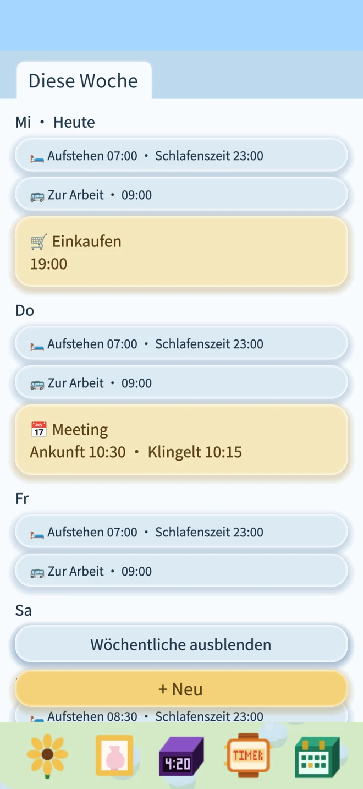
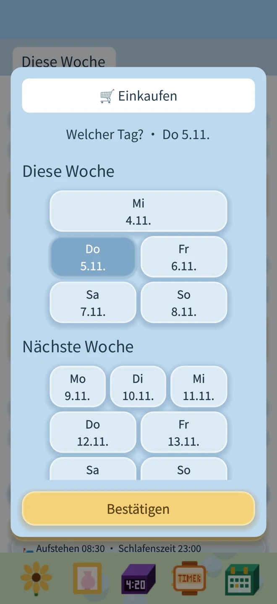
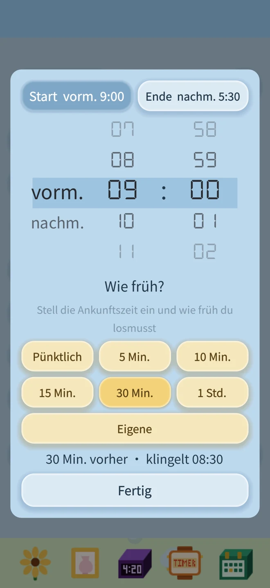
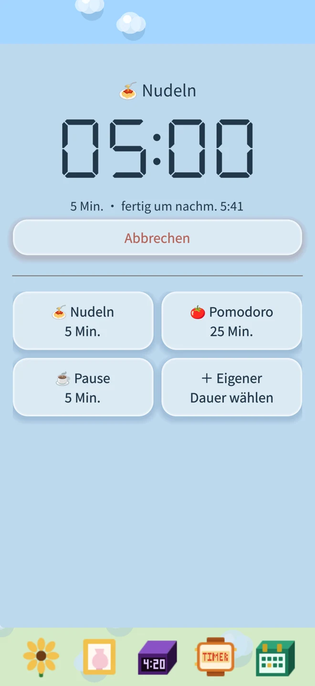

Wenn du dein Leben danach planst, was an welchem Wochentag ansteht, ist Kleine Blume Wecker für dich. Montags arbeiten, mittwochs die Kinder abholen, freitags zum Kurs und am Wochenende später aufstehen: Lege für jeden Wochentag fest, was du vorhast und wann du erinnert werden möchtest. Deine Pläne wiederholen sich jede Woche. Ändert sich etwas, überspringst du nur dieses eine Mal; nächste Woche geht es wie gewohnt weiter. Wöchentliche Routinen und einmalige Termine siehst du gemeinsam in der Planung.
Keine Werbung. Kein Abo. Kein Internet nötig. Ganz deins.
Wecker, Erinnerungen und der Fortschritt deiner Blume bleiben auf deinem Gerät.
Deine täglichen Pläne bekommen einen kleinen Begleiter. Wähle Blume und Topf, gieße sie und tippe sie an, damit sie sich sanft bewegt.
Sonnenblume, Schmetterlingsorchidee, Klivie, Alpenveilchen oder Kalanchoe – dazu ein Katzen-, Kaninchen- oder Igelhäuschen-Topf. Nur die Sonnenblume wächst mit Dünger immer weiter in die Höhe.
Echter App-Screenshot: Sonnenblume im Igelhäuschen-Topf
Planung: deine ganze Woche an einem Ort
Diese Woche, nächste Woche und danach: alles nach Wochen sortiert. Blaue Erinnerungen wiederholen sich wöchentlich, gelbe klingeln nur einmal.
Erinnerungszeiten für Montag bis Sonntag einzeln einstellen
Wöchentliche Erinnerungen fürs Aufstehen, Essen und mehr hinzufügen
Einen Wochentag pausieren oder nur die nächste Erinnerung überspringen
Wochenpläne ansehen und einmalige Erinnerungen hinzufügen

App-Vorschau mit Beispielerinnerungen
Eine Erinnerung für einen einzigen Tag

Ankunft planen, rechtzeitig losgehen

Timer: Lieblingszeiten speichern und wiederverwenden
Nudeln, Tee oder eine Pause: Wähle eine Vorlage und bestätige den Start. Eigene Namen und Zeiten kannst du speichern und wiederverwenden.

App-Vorschau mit Beispielerinnerungen
Deine eigene Blume Wähle eine Sonnenblume oder Orchidee und einen passenden Topf. Ziehe die Gießkanne zum Gießen und den Dünger zum Düngen auf die Pflanze. Ohne Wasser lässt sie irgendwann den Kopf hängen. Mit etwas Wasser richtet sie sich wieder auf.
Auch auf dem Sperrbildschirm Nutzt Systemwecker unter iOS 26 und benötigt die Erlaubnis für Wecker. Nach der Freigabe können sie auch im Lautlosmodus klingeln. Laufende Timer können auf dem Sperrbildschirm und bei unterstützten Modellen in der Dynamic Island erscheinen. Nach Ablauf erhältst du eine Mitteilung.
Stell den Wecker für morgen. Gieß deine Blume heute.